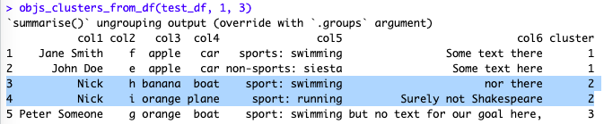

Now I’m probably NOT a good reference for this, but the “low-code” trend does make sense… Up to a point. As long as you understand what you’re doing, it’s probably an OK approach.
After all, one doesn’t need to be a mechanic to drive a car… Although I’m certain there is a plus side if you actually are a mechanic. Bad example 🙂
Intro
So a few days ago (at the time of writing) a colleague asked me if I would be able to come up with a way of finding “similar things” within a dataset… And obviously I thought: “Sure, that’s unsupervised ML, let’s do some clustering”. And so I started on the path to program a dashboard that would allow for applying some “K-Means” magic to data from a specific CSV file. Relevant detail: the data was text based, not numeric.
I used some of the NLP concepts I already used in this blog post a few weeks back, to get to a numeric matrix first; then instead of doing “supervised” ML, I would do K-Means on the resulting matrix.
One way to go
Say you receive a CSV (aka a dataframe for our objectives). Say you want to see how one variable (column) of entries can group together (or not). Say you call that the X entries. You could say column X has “persons” (John Doe, Jane Smith, etc.)
Now this is NOT ideal (actually it’s a pretty dirty approach), but it IS one way to go and it does work in some cases at least:
Use the resting variables (columns that DO NOT include Column X) as text entries, put them together as one column of text (so all text for each row becomes one cell of text). Then create one cell putting together ALL THE RESULTING text PER PERSON (column X) in yet another cell.
Now you end up with one row per person, with all text from the original dataframe as one “text cell” for each person. There will be repeated words, it will be messy as hell… But then you can consider that NEW data frame as having documents per person (one row == one document).
So what would happen then?
What if you applied TF-IDF on the resulting new data.frame?
You could then apply K-Means (or other Clustering algorithms) on the resulting dataset.
Now that doesn’t sound like much but if you have followed, essentially in the above we have treated our “persons” as “authors” of “books”.
We have then characterized their writing by applying TF-IDF on their “text” (loosely extracted directly from the original data frame, which is NOT a great way to go, but it is a trick)… For instance the original data frame might contain text variables that are not words…
And then we have tried to see if there was any “clustering” around our “authors”, in other words: maybe some “authors” would write with similar “words” (or frequency thereof) as others?
Does it actually work?
Judge by yourself: I posted here my demo code for the above. (I’m not proud of that code, there is plenty of room for improvement, but for demo purposes that’s about enough.)
First I create a dataframe with 5 rows, describing 4 theoretical persons (see below). So can we expect to identify some groups out of these four persons? Say 3 groups?
(3 groups: 3 here is the “K” in K-Means, and it must be set ahead of time. Discussing “Elbow-method” and the likes for optimal K selection is beyond our point for today, sorry, but let’s just say there is an easy visual way of identifying a “good number of clusters” – there are plenty of resources out there about K-Means, so I won’t enter much into how it works today).
Visually, we can tell we have separations between the persons in our dataframe:

But no clear choice for 3 groups, is there?
Then let’s see what K-Means does for us (I just ran the function):

One could discuss long and large about whether this makes sense. First, entries for Nick were counted as one per our TF-IDF approach, so no surprise they’re in the same cluster.
Second, well, Nick set apart, we get one group with persons who like apples and cars, and a separate third group for… Well, for good measure, as there were only four possible groups in our dataset.
Again: NOT A GREAT APPROACH. But the thing is, I do think it can be practical to call this function from time to time on data.frames for which I want to see if there is any kind of structure hidden inside.
A better approach (obviously) – and the usual way to go about K-Means – is to test for different numbers of clusters, but that’s for an actual more serious deployment, which is beyond the point of this Blog entry.
Maybe a couple of warnings: For high dimensionality (many unique words or rather strings in the dataset) the tf-idf matrix grows rapidly so trimming it is of clear value. That’s because we assumed the dataframe contained text, but it might contain coded info, dirty text strings, etc. Our assumptions are probably too simplistic so once again, use the approach with care. Numeric data should be set aside from the TF-IDF steps and then put back in for K-Means steps. And as usual, for too many dimensions or points to cluster, K-Means can slow down (as it calculates the distance from each point on our n dimensions (the unique strings in the data) to each cluster center at each iteration, and well albeit simple math, run it on sufficiently big number of distances and it will slow down…).
Also, if you have non-informative stuff (say words that are unique to each entry by which you are trying to cluster), get rid of that, they don’t help our algorithm.
Conclusions
I explained the initial concept in the above. Now, think about it further: in theory one could call that clustering function basically on any dataframe.
This is not quite “AutoML”, but definitely a bit more “low-code” than by programming from scratch every time. And if you put together some Network Graphs and a Shiny Dashboard as an interface (yes, I’ve done that ;)), well…
Let me tell you, it can be a rather practical a tool for quick and dirty checks 🙂